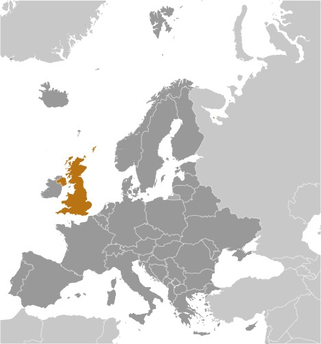
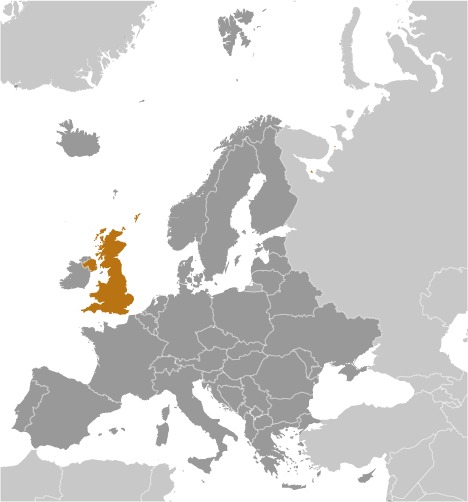

-
Introduction :: United Kingdom
-
Background:
The United Kingdom has historically played a leading role in developing parliamentary democracy and in advancing literature and science. At its zenith in the 19th century, the British Empire stretched over one-fourth of the earth's surface. The first half of the 20th century saw the UK's strength seriously depleted in two world wars and the Irish Republic's withdrawal from the union. The second half witnessed the dismantling of the Empire and the UK rebuilding itself into a modern and prosperous European nation. As one of five permanent members of the UN Security Council and a founding member of NATO and the Commonwealth, the UK pursues a global approach to foreign policy. The Scottish Parliament, the National Assembly for Wales, and the Northern Ireland Assembly were established in 1998.
The UK has been an active member of the EU since its accession in 1973, although it chose to remain outside the Economic and Monetary Union. However, motivated in part by frustration at a remote bureaucracy in Brussels and massive migration into the country, UK citizens on 23 June 2016 narrowly voted to leave the EU. The UK is scheduled to depart the EU on 31 January 2020, but negotiations on the future EU-UK economic and security relationship will continue throughout 2020 and potentially beyond.
-
Geography :: United Kingdom
-
Location:Western Europe, islands - including the northern one-sixth of the island of Ireland - between the North Atlantic Ocean and the North Sea; northwest of FranceGeographic coordinates:54 00 N, 2 00 WMap references:EuropeArea:total: 243,610 sq kmland: 241,930 sq kmwater: 1,680 sq km
note 1: the percentage area breakdown of the four UK countries is: England 53%, Scotland 32%, Wales 9%, and Northern Ireland 6%
note 2: includes Rockall and the Shetland Islands, which are part of Scotlandcountry comparison to the world: 80Area - comparative:twice the size of Pennsylvania; slightly smaller than OregonArea comparison map: The World Factbook Field Image ModalEurope :: United Kingdom Print
The World Factbook Field Image ModalEurope :: United Kingdom Print Image Description
Image Descriptiontwice the size of Pennsylvania; slightly smaller than Oregon
Land boundaries:total: 499 kmborder countries (1): Ireland 499 kmCoastline:12,429 kmMaritime claims:territorial sea: 12 nmcontinental shelf: as defined in continental shelf orders or in accordance with agreed upon boundariesexclusive fishing zone: 200 nmClimate:temperate; moderated by prevailing southwest winds over the North Atlantic Current; more than one-half of the days are overcastTerrain:mostly rugged hills and low mountains; level to rolling plains in east and southeastElevation:mean elevation: 162 mlowest point: The Fens -4 mhighest point: Ben Nevis 1,345 mNatural resources:coal, petroleum, natural gas, iron ore, lead, zinc, gold, tin, limestone, salt, clay, chalk, gypsum, potash, silica sand, slate, arable landLand use:agricultural land: 71% (2011 est.)arable land: 25.1% (2011 est.) / permanent crops: 0.2% (2011 est.) / permanent pasture: 45.7% (2011 est.)forest: 11.9% (2011 est.)other: 17.1% (2011 est.)Irrigated land:950 sq km (2012)Population distribution:the core of the population lies in and around London, with significant clusters found in central Britain around Manchester and Liverpool, in the Scotish lowlands between Endinburgh and Glasgow, southern Wales in and around Cardiff, and far eastern Northern Ireland centered on BelfastNatural hazards:winter windstorms; floodsEnvironment - current issues:air pollution improved but remains a concern, particularly in the London region; soil pollution from pesticides and heavy metals; decline in marine and coastal habitats brought on by pressures from housing, tourism, and industryEnvironment - international agreements:party to: Air Pollution, Air Pollution-Nitrogen Oxides, Air Pollution-Persistent Organic Pollutants, Air Pollution-Sulfur 94, Air Pollution-Volatile Organic Compounds, Antarctic-Environmental Protocol, Antarctic-Marine Living Resources, Antarctic Seals, Antarctic Treaty, Biodiversity, Climate Change, Climate Change-Kyoto Protocol, Desertification, Endangered Species, Environmental Modification, Hazardous Wastes, Law of the Sea, Marine Dumping, Marine Life Conservation, Ozone Layer Protection, Ship Pollution, Tropical Timber 83, Tropical Timber 94, Wetlands, Whalingsigned, but not ratified: none of the selected agreementsGeography - note:lies near vital North Atlantic sea lanes; only 35 km from France and linked by tunnel under the English Channel (the Channel Tunnel or Chunnel); because of heavily indented coastline, no location is more than 125 km from tidal waters -
People and Society :: United Kingdom
-
Population:65,761,117 United Kingdom (July 2020 est.)constituent countries by percentage of total population:
England 84%
Scotland 8%
Wales 5%
Northern Ireland 3%country comparison to the world: 22Nationality:noun: Briton(s), British (collective plural)adjective: BritishEthnic groups:White 87.2%, Black/African/Caribbean/black British 3%, Asian/Asian British: Indian 2.3%, Asian/Asian British: Pakistani 1.9%, mixed 2%, other 3.7% (2011 est.)Languages:Englishnote: the following are recognized regional languages: Scots (about 30% of the population of Scotland), Scottish Gaelic (about 60,000 speakers in Scotland), Welsh (about 20% of the population of Wales), Irish (about 10% of the population of Northern Ireland), Cornish (some 2,000 to 3,000 people in Cornwall) (2012 est.)
Religions:Christian (includes Anglican, Roman Catholic, Presbyterian, Methodist) 59.5%, Muslim 4.4%, Hindu 1.3%, other 2%, unspecified 7.2%, none 25.7% (2011 est.)Age structure:0-14 years: 17.63% (male 5,943,435/female 5,651,780)15-24 years: 11.49% (male 3,860,435/female 3,692,398)25-54 years: 39.67% (male 13,339,965/female 12,747,598)55-64 years: 12.73% (male 4,139,378/female 4,234,701)65 years and over: 18.48% (male 5,470,116/female 6,681,311) (2020 est.)population pyramid: The World Factbook Field Image ModalEurope :: United Kingdom Print
The World Factbook Field Image ModalEurope :: United Kingdom Print Image DescriptionThis is the population pyramid for the United Kingdom. A population pyramid illustrates the age and sex structure of a country's population and may provide insights about political and social stability, as well as economic development. The population is distributed along the horizontal axis, with males shown on the left and females on the right. The male and female populations are broken down into 5-year age groups represented as horizontal bars along the vertical axis, with the youngest age groups at the bottom and the oldest at the top. The shape of the population pyramid gradually evolves over time based on fertility, mortality, and international migration trends.
Image DescriptionThis is the population pyramid for the United Kingdom. A population pyramid illustrates the age and sex structure of a country's population and may provide insights about political and social stability, as well as economic development. The population is distributed along the horizontal axis, with males shown on the left and females on the right. The male and female populations are broken down into 5-year age groups represented as horizontal bars along the vertical axis, with the youngest age groups at the bottom and the oldest at the top. The shape of the population pyramid gradually evolves over time based on fertility, mortality, and international migration trends.
For additional information, please see the entry for Population pyramid on the Definitions and Notes page under the References tab.Dependency ratios:total dependency ratio: 57.1youth dependency ratio: 27.8elderly dependency ratio: 29.3potential support ratio: 3.4 (2020 est.)Median age:total: 40.6 yearsmale: 39.6 yearsfemale: 41.7 years (2020 est.)country comparison to the world: 50Population growth rate:0.49% (2020 est.)country comparison to the world: 155Birth rate:11.9 births/1,000 population (2020 est.)country comparison to the world: 165Death rate:9.5 deaths/1,000 population (2020 est.)country comparison to the world: 47Net migration rate:2.5 migrant(s)/1,000 population (2020 est.)country comparison to the world: 40Population distribution:the core of the population lies in and around London, with significant clusters found in central Britain around Manchester and Liverpool, in the Scotish lowlands between Endinburgh and Glasgow, southern Wales in and around Cardiff, and far eastern Northern Ireland centered on BelfastUrbanization:urban population: 83.9% of total population (2020)rate of urbanization: 0.89% annual rate of change (2015-20 est.)total population growth rate v. urban population growth rate, 2000-2030: PDFMajor urban areas - population:9.304 million LONDON (capital), 2.730 million Manchester, 2.607 million Birmingham, 1.889 million West Yorkshire, 1.663 million Glasgow, 928,000 Southampton/Portsmouth (2020)Sex ratio:at birth: 1.05 male(s)/female0-14 years: 1.05 male(s)/female15-24 years: 1.05 male(s)/female25-54 years: 1.05 male(s)/female55-64 years: 0.98 male(s)/female65 years and over: 0.82 male(s)/femaletotal population: 0.99 male(s)/female (2020 est.)Mother's mean age at first birth:28.8 years (2017 est.)note: data represent England and Wales only
Maternal mortality rate:7 deaths/100,000 live births (2017 est.)country comparison to the world: 158Infant mortality rate:total: 4.1 deaths/1,000 live birthsmale: 4.5 deaths/1,000 live birthsfemale: 3.7 deaths/1,000 live births (2020 est.)country comparison to the world: 189Life expectancy at birth:total population: 81.1 yearsmale: 78.8 yearsfemale: 83.5 years (2020 est.)country comparison to the world: 40Total fertility rate:1.86 children born/woman (2020 est.)country comparison to the world: 139Drinking water source:improved: urban: 100% of populationrural: 100% of populationtotal: 100% of populationunimproved: urban: 0% of populationrural: 0% of populationtotal: 0% of population (2017 est.)Current Health Expenditure:9.6% (2017)Physicians density:2.79 physicians/1,000 population (2017)Hospital bed density:2.5 beds/1,000 population (2017)Sanitation facility access:improved: urban: 100% of populationrural: 100% of populationtotal: 100% of populationunimproved: urban: 0% of populationrural: 0% of populationtotal: 0% of population (2017 est.)HIV/AIDS - adult prevalence rate:NAHIV/AIDS - people living with HIV/AIDS:NAHIV/AIDS - deaths:NAMajor infectious diseases:Covid-19 (see note) (2020)note: widespread ongoing transmission of a respiratory illness caused by the novel coronavirus (COVID-19) is occurring throughout the UK; as of 8 December 2020, the UK has reported a total of 1,705,975 cases of COVID-19 or 25,130 cumulative cases of COVID-19 per 1 million population with 899 cumulative deaths per 1 million population; individuals arriving in the UK must self-isolate for 14 days and may be contacted to verify compliance; new arrivals will be required to provide UK officials with contact and travel information prior to arrival; the US Department of Homeland Security has issued instructions requiring US passengers who have been in the UK to travel through select airports where the US Government has implemented enhanced screening proceduresObesity - adult prevalence rate:27.8% (2016)country comparison to the world: 36Education expenditures:5.4% of GDP (2017)country comparison to the world: 43School life expectancy (primary to tertiary education):total: 17 yearsmale: 17 yearsfemale: 18 years (2018)Unemployment, youth ages 15-24:total: 11.3%male: 12.2%female: 10.3% (2018 est.)country comparison to the world: 115 -
Government :: United Kingdom
-
Country name:conventional long form: United Kingdom of Great Britain and Northern Ireland; note - the island of Great Britain includes England, Scotland, and Walesconventional short form: United Kingdomabbreviation: UKetymology: self-descriptive country name; the designation "Great Britain," in the sense of "Larger Britain," dates back to medieval times and was used to distinguish the island from "Little Britain," or Brittany in modern France; the name Ireland derives from the Gaelic "Eriu," the matron goddess of Ireland (goddess of the land)Government type:parliamentary constitutional monarchy; a Commonwealth realmCapital:name: Londongeographic coordinates: 51 30 N, 0 05 Wtime difference: UTC 0 (5 hours ahead of Washington, DC, during Standard Time)daylight saving time: +1hr, begins last Sunday in March; ends last Sunday in October
note: the time statements apply to the United Kingdom proper, not to its crown dependencies or overseas territories
etymology: the name derives from the Roman settlement of Londinium, established on the current site of London around A.D. 43; the original meaning of the name is uncertainAdministrative divisions:England: 26 two-tier counties, 32 London boroughs and 1 City of London or Greater London, 36 metropolitan districts, 56 unitary authorities (including 4 single-tier counties*);
two-tier counties: Buckinghamshire, Cambridgeshire, Cumbria, Derbyshire, Devon, Dorset, East Sussex, Essex, Gloucestershire, Hampshire, Hertfordshire, Kent, Lancashire, Leicestershire, Lincolnshire, Norfolk, Northamptonshire, North Yorkshire, Nottinghamshire, Oxfordshire, Somerset, Staffordshire, Suffolk, Surrey, Warwickshire, West Sussex, Worcestershire
London boroughs and City of London or Greater London: Barking and Dagenham, Barnet, Bexley, Brent, Bromley, Camden, Croydon, Ealing, Enfield, Greenwich, Hackney, Hammersmith and Fulham, Haringey, Harrow, Havering, Hillingdon, Hounslow, Islington, Kensington and Chelsea, Kingston upon Thames, Lambeth, Lewisham, City of London, Merton, Newham, Redbridge, Richmond upon Thames, Southwark, Sutton, Tower Hamlets, Waltham Forest, Wandsworth, Westminster
metropolitan districts: Barnsley, Birmingham, Bolton, Bradford, Bury, Calderdale, Coventry, Doncaster, Dudley, Gateshead, Kirklees, Knowlsey, Leeds, Liverpool, Manchester, Newcastle upon Tyne, North Tyneside, Oldham, Rochdale, Rotherham, Salford, Sandwell, Sefton, Sheffield, Solihull, South Tyneside, St. Helens, Stockport, Sunderland, Tameside, Trafford, Wakefield, Walsall, Wigan, Wirral, Wolverhampton
unitary authorities: Bath and North East Somerset; Bedford; Blackburn with Darwen; Blackpool; Bournemouth, Christchurch and Poole; Bracknell Forest; Brighton and Hove; City of Bristol; Central Bedfordshire; Cheshire East; Cheshire West and Chester; Cornwall; Darlington; Derby; Dorset; Durham County*; East Riding of Yorkshire; Halton; Hartlepool; Herefordshire*; Isle of Wight*; Isles of Scilly; City of Kingston upon Hull; Leicester; Luton; Medway; Middlesbrough; Milton Keynes; North East Lincolnshire; North Lincolnshire; North Somerset; Northumberland*; Nottingham; Peterborough; Plymouth; Portsmouth; Reading; Redcar and Cleveland; Rutland; Shropshire; Slough; South Gloucestershire; Southampton; Southend-on-Sea; Stockton-on-Tees; Stoke-on-Trent; Swindon; Telford and Wrekin; Thurrock; Torbay; Warrington; West Berkshire; Wiltshire; Windsor and Maidenhead; Wokingham; York
Northern Ireland: 5 borough councils, 4 district councils, 2 city councils;
borough councils: Antrim and Newtownabbey; Ards and North Down; Armagh City, Banbridge, and Craigavon; Causeway Coast and Glens; Mid and East Antrim
district councils: Derry City and Strabane; Fermanagh and Omagh; Mid Ulster; Newry, Murne, and Down
city councils: Belfast; Lisburn and Castlereagh
Scotland: 32 council areas;
council areas: Aberdeen City, Aberdeenshire, Angus, Argyll and Bute, Clackmannanshire, Dumfries and Galloway, Dundee City, East Ayrshire, East Dunbartonshire, East Lothian, East Renfrewshire, City of Edinburgh, Eilean Siar (Western Isles), Falkirk, Fife, Glasgow City, Highland, Inverclyde, Midlothian, Moray, North Ayrshire, North Lanarkshire, Orkney Islands, Perth and Kinross, Renfrewshire, Shetland Islands, South Ayrshire, South Lanarkshire, Stirling, The Scottish Borders, West Dunbartonshire, West Lothian
Wales: 22 unitary authorities;
unitary authorities: Blaenau Gwent, Bridgend, Caerphilly, Cardiff, Carmarthenshire, Ceredigion, Conwy, Denbighshire, Flintshire, Gwynedd, Isle of Anglesey, Merthyr Tydfil, Monmouthshire, Neath Port Talbot, Newport, Pembrokeshire, Powys, Rhondda Cynon Taff, Swansea, The Vale of Glamorgan, Torfaen, Wrexham
Dependent areas:Anguilla; Bermuda; British Indian Ocean Territory; British Virgin Islands; Cayman Islands; Falkland Islands; Gibraltar; Montserrat; Pitcairn Islands; Saint Helena, Ascension, and Tristan da Cunha; South Georgia and the South Sandwich Islands; Turks and Caicos IslandsIndependence:no official date of independence: 927 (minor English kingdoms unite); 3 March 1284 (enactment of the Statute of Rhuddlan uniting England and Wales); 1536 (Act of Union formally incorporates England and Wales); 1 May 1707 (Acts of Union formally unite England, Scotland, and Wales as Great Britain); 1 January 1801 (Acts of Union formally unite Great Britain and Ireland as the United Kingdom of Great Britain and Ireland); 6 December 1921 (Anglo-Irish Treaty formalizes partition of Ireland; six counties remain part of the United Kingdom and Northern Ireland); 12 April 1927 (Royal and Parliamentary Titles Act establishes current name of the United Kingdom of Great Britain and Northern Ireland)National holiday:the UK does not celebrate one particular national holidayConstitution:history: unwritten; partly statutes, partly common law and practiceamendments: proposed as a bill for an Act of Parliament by the government, by the House of Commons, or by the House of Lords; passage requires agreement by both houses and by the monarch (Royal Assent); note - additions include the Human Rights Act of 1998, the Constitutional Reform and Governance Act 2010, the Parliamentary Voting System and Constituencies Act 2011, the Fixed-term Parliaments Act 2011, and the House of Lords (Expulsion and Suspension) Act 2015Legal system:common law system; has nonbinding judicial review of Acts of Parliament under the Human Rights Act of 1998International law organization participation:accepts compulsory ICJ jurisdiction with reservations; accepts ICCt jurisdictionCitizenship:citizenship by birth: nocitizenship by descent only: at least one parent must be a citizen of the United Kingdomdual citizenship recognized: yesresidency requirement for naturalization: 5 yearsSuffrage:18 years of age; universalExecutive branch:chief of state: Queen ELIZABETH II (since 6 February 1952); Heir Apparent Prince CHARLES (son of the queen, born 14 November 1948)head of government: Prime Minister Boris JOHNSON (Conservative) (since 24 July 2019)cabinet: Cabinet appointed by the prime ministerelections/appointments: the monarchy is hereditary; following legislative elections, the leader of the majority party or majority coalition usually becomes the prime minister; election last held on 12 December 2019 (next to be held by 2 May 2024)note: in addition to serving as the UK head of state, the British sovereign is the constitutional monarch for 15 additional Commonwealth countries (these 16 states are each referred to as a Commonwealth realm)
Legislative branch:description: bicameral Parliament consists of:
House of Lords (membership not fixed; as of December 2019, 796 lords were eligible to participate in the work of the House of Lords - 679 life peers, 91 hereditary peers, and 26 clergy; members are appointed by the monarch on the advice of the prime minister and non-party political members recommended by the House of Lords Appointments Commission); note - House of Lords total does not include ineligible members or members on leave of absence
House of Commons (650 seats; members directly elected in single-seat constituencies by simple majority popular vote to serve 5-year terms unless the House is dissolved earlier)elections:
House of Lords - no elections; note - in 1999, as provided by the House of Lords Act, elections were held in the House of Lords to determine the 92 hereditary peers who would remain; elections held only as vacancies in the hereditary peerage arise)
House of Commons - last held on 12 December 2019 (next to be held by 2 May 2024)election results:
House of Lords - composition - men 579, women 217, percent of women 27.3%
House of Commons - percent of vote by party - Conservative 43.6%, Labor 32.1%, Lib Dems 11.6%, SNP 3.9%, Greens 2.7%, Brexit Party 2.0%, other 4.1%; seats by party - Conservative 365, Labor 202, SNP 48, Lib Dems 11, DUP 8, Sinn Fein 7, Plaid Cymru 4, other 9; composition - men 430, women 220, percent of women 34%; total Parliament percent of women 30.2%Judicial branch:highest courts: Supreme Court (consists of 12 justices, including the court president and deputy president); note - the Supreme Court was established by the Constitutional Reform Act 2005 and implemented in 2009, replacing the Appellate Committee of the House of Lords as the highest court in the United Kingdomjudge selection and term of office: judge candidates selected by an independent committee of several judicial commissions, followed by their recommendations to the prime minister, and appointed by the monarch; justices serve for lifesubordinate courts: England and Wales: Court of Appeal (civil and criminal divisions); High Court; Crown Court; County Courts; Magistrates' Courts; Scotland: Court of Sessions; Sheriff Courts; High Court of Justiciary; tribunals; Northern Ireland: Court of Appeal in Northern Ireland; High Court; county courts; magistrates' courts; specialized tribunalsPolitical parties and leaders:Alliance Party (Northern Ireland) [Naomi LONG]
Brexit Party [Nigel FARAGE]
Conservative and Unionist Party [Boris JOHNSON]
Democratic Unionist Party or DUP (Northern Ireland) [Arlene FOSTER]
Green Party of England and Wales or Greens [Sian BERRY and Jonathan BARTLEY]
Labor (Labour) Party [Sir Keir STARMER]
Liberal Democrats (Lib Dems) [Ed Davey]
Party of Wales (Plaid Cymru) [Adam PRICE]
Scottish National Party or SNP [Nicola STURGEON]
Sinn Fein (Northern Ireland) [Mary Lou MCDONALD]
Social Democratic and Labor Party or SDLP (Northern Ireland) [Colum EASTWOOD]
Ulster Unionist Party or UUP (Northern Ireland) [Robin SWANN]
UK Independence Party or UKIP [Pat MOUNTAIN, interim leader]International organization participation:ADB (nonregional member), AfDB (nonregional member), Arctic Council (observer), Australia Group, BIS, C, CBSS (observer), CD, CDB, CE, CERN, EAPC, EBRD, ECB, EIB, EITI (implementing country), ESA, EU, FAO, FATF, G-5, G-7, G-8, G-10, G-20, IADB, IAEA, IBRD, ICAO, ICC (national committees), ICCt, ICRM, IDA, IEA, IFAD, IFC, IFRCS, IGAD (partners), IHO, ILO, IMF, IMO, IMSO, Interpol, IOC, IOM, IPU, ISO, ITSO, ITU, ITUC (NGOs), MIGA, MINUSMA, MONUSCO, NATO, NEA, NSG, OAS (observer), OECD, OPCW, OSCE, Pacific Alliance (observer), Paris Club, PCA, PIF (partner), SELEC (observer), SICA (observer), UN, UNCTAD, UNESCO, UNFICYP, UNHCR, UNMISS, UNRWA, UN Security Council (permanent), UPU, WCO, WHO, WIPO, WMO, WTO, ZCDiplomatic representation in the US:chief of mission: Ambassador Karen Elizabeth PIERCE (since 8 April 2020)chancery: 3100 Massachusetts Avenue NW, Washington, DC 20008telephone: [1] (202) 588-6500FAX: [1] (202) 588-7870consulate(s) general: Atlanta, Boston, Chicago, Denver, Houston, Los Angeles, Miami, New York, San Franciscoconsulate(s): Orlando (FL), San Juan (Puerto Rico)Diplomatic representation from the US:chief of mission: Ambassador Robert Wood "Woody" JOHNSON IV (since 29 August 2017)telephone: [44] 20-7499-9000embassy:33 Nine Elms Lane, London, SW11 7US or SW8 5DB (driving/GPS postcode)
mailing address: PSC 801, Box 40, FPO AE 09498-4040FAX: [44] 20-7891-3151consulate(s) general: Belfast, EdinburghFlag description:blue field with the red cross of Saint George (patron saint of England) edged in white superimposed on the diagonal red cross of Saint Patrick (patron saint of Ireland), which is superimposed on the diagonal white cross of Saint Andrew (patron saint of Scotland); properly known as the Union Flag, but commonly called the Union Jack; the design and colors (especially the Blue Ensign) have been the basis for a number of other flags including other Commonwealth countries and their constituent states or provinces, and British overseas territoriesNational symbol(s):lion (Britain in general); lion, Tudor rose, oak (England); lion, unicorn, thistle (Scotland); dragon, daffodil, leek (Wales); shamrock, flax (Northern Ireland); national colors: red, white, blue (Britain in general); red, white (England); blue, white (Scotland); red, white, green (Wales)National anthem:name: God Save the Queenlyrics/music: unknownnote: in use since 1745; by tradition, the song serves as both the national and royal anthem of the UK; it is known as either "God Save the Queen" or "God Save the King," depending on the gender of the reigning monarch; it also serves as the royal anthem of many Commonwealth nations
-
Economy :: United Kingdom
-
Economic overview:
The UK, a leading trading power and financial center, is the third largest economy in Europe after Germany and France. Agriculture is intensive, highly mechanized, and efficient by European standards, producing about 60% of food needs with less than 2% of the labor force. The UK has large coal, natural gas, and oil resources, but its oil and natural gas reserves are declining; the UK has been a net importer of energy since 2005. Services, particularly banking, insurance, and business services, are key drivers of British GDP growth. Manufacturing, meanwhile, has declined in importance but still accounts for about 10% of economic output.
In 2008, the global financial crisis hit the economy particularly hard, due to the importance of its financial sector. Falling home prices, high consumer debt, and the global economic slowdown compounded the UK’s economic problems, pushing the economy into recession in the latter half of 2008 and prompting the then BROWN (Labour) government to implement a number of measures to stimulate the economy and stabilize the financial markets. Facing burgeoning public deficits and debt levels, in 2010 the then CAMERON-led coalition government (between Conservatives and Liberal Democrats) initiated an austerity program, which has continued under the Conservative government. However, the deficit still remains one of the highest in the G7, standing at 3.6% of GDP as of 2017, and the UK has pledged to lower its corporation tax from 20% to 17% by 2020. The UK had a debt burden of 90.4% GDP at the end of 2017.
The UK economy has begun to slow since the referendum vote to leave the EU in June 2016. A sustained depreciation of the British pound has increased consumer and producer prices, weighing on consumer spending without spurring a meaningful increase in exports. The UK has an extensive trade relationship with other EU members through its single market membership, and economic observers have warned the exit will jeopardize its position as the central location for European financial services. The UK is slated to leave the EU at the end of January 2020.
GDP real growth rate:1.26% (2019 est.)1.25% (2018 est.)1.74% (2017 est.)country comparison to the world: 164Inflation rate (consumer prices):1.7% (2019 est.)2.4% (2018 est.)2.6% (2017 est.)country comparison to the world: 99Credit ratings:Fitch rating: AA- (2020)Moody's rating: Aaa (2020)Standard & Poors rating: AA (2016)GDP (purchasing power parity) - real:$2,683,983,000,000 (2019 est.)$2,650,562,000,000 (2018 est.)$2,617,772,000,000 (2017 est.)note: data are in 2010 dollars
GDP (official exchange rate):$2,827,918,000,000 (2019 est.)GDP - per capita (PPP):$43,111 (2019 est.)$42,821 (2018 est.)$42,554 (2017 est.)note: data are in 2010 dollars
country comparison to the world: 38Gross national saving:13.6% of GDP (2017 est.)12% of GDP (2016 est.)12.3% of GDP (2015 est.)country comparison to the world: 142GDP - composition, by sector of origin:agriculture: 0.7% (2017 est.)industry: 20.2% (2017 est.)services: 79.2% (2017 est.)GDP - composition, by end use:household consumption: 65.8% (2017 est.)government consumption: 18.3% (2017 est.)investment in fixed capital: 17.2% (2017 est.)investment in inventories: 0.2% (2017 est.)exports of goods and services: 30.2% (2017 est.)imports of goods and services: -31.5% (2017 est.)Ease of Doing Business Index scores:93.8 (2020)Agriculture - products:cereals, oilseed, potatoes, vegetables; cattle, sheep, poultry; fish; milk, eggsIndustries:machine tools, electric power equipment, automation equipment, railroad equipment, shipbuilding, aircraft, motor vehicles and parts, electronics and communications equipment, metals, chemicals, coal, petroleum, paper and paper products, food processing, textiles, clothing, other consumer goodsIndustrial production growth rate:3.4% (2017 est.)country comparison to the world: 93Labor force:16.033 million (2020 est.)country comparison to the world: 33Labor force - by occupation:agriculture: 1.3%industry: 15.2%services: 83.5% (2014 est.)Unemployment rate:3.17% (2019 est.)2.51% (2018 est.)country comparison to the world: 43Population below poverty line:15% (2013 est.)Budget:revenues: 1.028 trillion (2017 est.)expenditures: 1.079 trillion (2017 est.)Taxes and other revenues:39.1% (of GDP) (2017 est.)country comparison to the world: 49Budget surplus (+) or deficit (-):-1.9% (of GDP) (2017 est.)country comparison to the world: 102Public debt:87.5% of GDP (2017 est.)87.9% of GDP (2016 est.)note: data cover general government debt and include debt instruments issued (or owned) by government entities other than the treasury; the data include treasury debt held by foreign entities; the data include debt issued by subnational entities, as well as intragovernmental debt; intragovernmental debt consists of treasury borrowings from surpluses in the social funds, such as for retirement, medical care, and unemployment; debt instruments for the social funds are not sold at public auctions
country comparison to the world: 29Fiscal year:6 April - 5 AprilCurrent account balance:-$121.921 billion (2019 est.)-$104.927 billion (2018 est.)country comparison to the world: 205Exports:$901.882 billion (2019 est.)$877.501 billion (2018 est.)$851.693 billion (2017 est.)country comparison to the world: 6Exports - partners:US 13.2%, Germany 10.5%, France 7.4%, Netherlands 6.2%, Ireland 5.6%, China 4.8%, Switzerland 4.5% (2017)Exports - commodities:manufactured goods, fuels, chemicals; food, beverages, tobaccoImports:$987.018 billion (2019 est.)$955.655 billion (2018 est.)$930.354 billion (2017 est.)country comparison to the world: 6Imports - commodities:manufactured goods, machinery, fuels; foodstuffsImports - partners:Germany 13.7%, US 9.5%, China 9.3%, Netherlands 8%, France 5.4%, Belgium 5% (2017)Reserves of foreign exchange and gold:$150.8 billion (31 December 2017 est.)$129.6 billion (31 December 2015 est.)country comparison to the world: 17Debt - external:$8.126 trillion (31 March 2016 est.)$8.642 trillion (31 March 2015 est.)country comparison to the world: 2Exchange rates:British pounds (GBP) per US dollar -0.7836 (2017 est.)0.738 (2016 est.)0.738 (2015 est.)0.607 (2014 est.)0.6391 (2013 est.) -
Energy :: United Kingdom
-
Electricity access:electrification - total population: 100% (2020)Electricity - production:318.2 billion kWh (2016 est.)country comparison to the world: 12Electricity - consumption:309.2 billion kWh (2016 est.)country comparison to the world: 11Electricity - exports:2.153 billion kWh (2016 est.)country comparison to the world: 45Electricity - imports:19.7 billion kWh (2016 est.)country comparison to the world: 12Electricity - installed generating capacity:97.06 million kW (2016 est.)country comparison to the world: 13Electricity - from fossil fuels:50% of total installed capacity (2016 est.)country comparison to the world: 151Electricity - from nuclear fuels:9% of total installed capacity (2017 est.)country comparison to the world: 17Electricity - from hydroelectric plants:2% of total installed capacity (2017 est.)country comparison to the world: 143Electricity - from other renewable sources:39% of total installed capacity (2017 est.)country comparison to the world: 7Crude oil - production:1 million bbl/day (2018 est.)country comparison to the world: 20Crude oil - exports:710,600 bbl/day (2017 est.)country comparison to the world: 20Crude oil - imports:907,100 bbl/day (2017 est.)country comparison to the world: 11Crude oil - proved reserves:2.069 billion bbl (1 January 2018 est.)country comparison to the world: 33Refined petroleum products - production:1.29 million bbl/day (2017 est.)country comparison to the world: 16Refined petroleum products - consumption:1.584 million bbl/day (2017 est.)country comparison to the world: 15Refined petroleum products - exports:613,800 bbl/day (2017 est.)country comparison to the world: 14Refined petroleum products - imports:907,500 bbl/day (2017 est.)country comparison to the world: 7Natural gas - production:42.11 billion cu m (2017 est.)country comparison to the world: 19Natural gas - consumption:79.17 billion cu m (2017 est.)country comparison to the world: 10Natural gas - exports:11.27 billion cu m (2017 est.)country comparison to the world: 19Natural gas - imports:47 billion cu m (2017 est.)country comparison to the world: 11Natural gas - proved reserves:176 billion cu m (1 January 2018 est.)country comparison to the world: 46Carbon dioxide emissions from consumption of energy:424 million Mt (2017 est.)country comparison to the world: 16
-
Communications :: United Kingdom
-
Telephones - fixed lines:total subscriptions: 31,160,866subscriptions per 100 inhabitants: 47.62 (2019 est.)country comparison to the world: 8Telephones - mobile cellular:total subscriptions: 76,920,618subscriptions per 100 inhabitants: 117.55 (2019 est.)country comparison to the world: 21Telecommunication systems:general assessment: technologically advanced domestic and international system; one of the largest mobile and telecom markets in Europe for revenue and subscribers; will complete the switch to fiber by 2033; mobile penetration above the EU average; govt. to invest in fiber infrastructure and 5G technologies; operators expanded the reach of 5G services; FttP provided to over a million customers; super-fast broadband available to about 95% of customers (2020)domestic: equal mix of buried cables, microwave radio relay, and fiber-optic systems; fixed-line 48 per 100 and mobile-cellular 118 per 100 (2019)international: country code - 44; Landing points for the GTT Atlantic, Scotland-Northern Ireland -1, & -2, Lanis 1,-2, &-3, Sirius North, BT-MT-1, SHEFA-2, BT Highlands and Islands Submarine Cable System, Northern Lights, FARICE-1, Celtic Norse, Tampnet Offshore FOC Network, England Cable, CC-2, E-LLan, Sirius South, ESAT -1 & -2, Rockabill, Geo-Eirgrid, UK-Netherlands-14, Circle North & South, Ulysses2, Conceto, Farland North, Pan European Crossing, Solas, Swansea-Bream, GTT Express, Tata TGN-Atlantic & -Western Europe, Apollo, EIG, Glo-1, TAT-14, Yellow, Celtic, FLAG Atlantic-1, FEA, Isle of Scilly Cable, UK-Channel Islands-8 and SeaMeWe-3 submarine cables providing links throughout Europe, Asia, Africa, the Middle East, Southeast Asia, Australia, and US; satellite earth stations - 10 Intelsat (7 Atlantic Ocean and 3 Indian Ocean), 1 Inmarsat (Atlantic Ocean region), and 1 Eutelsat; at least 8 large international switching centers (2018)note: the COVID-19 outbreak is negatively impacting telecommunications production and supply chains globally; consumer spending on telecom devices and services has also slowed due to the pandemic's effect on economies worldwide; overall progress towards improvements in all facets of the telecom industry - mobile, fixed-line, broadband, submarine cable and satellite - has moderatedBroadcast media:public service broadcaster, British Broadcasting Corporation (BBC), is the largest broadcasting corporation in the world; BBC operates multiple TV networks with regional and local TV service; a mixed system of public and commercial TV broadcasters along with satellite and cable systems provide access to hundreds of TV stations throughout the world; BBC operates multiple national, regional, and local radio networks with multiple transmission sites; a large number of commercial radio stations, as well as satellite radio services are available (2018)Internet country code:.ukInternet users:total: 61,784,878percent of population: 94.9% (July 2018 est.)country comparison to the world: 13Broadband - fixed subscriptions:total: 26,586,110subscriptions per 100 inhabitants: 41 (2018 est.)country comparison to the world: 8Communications - note:note 1: the British Library claims to be the largest library in the world with well over 150 million items and in most known languages; it receives copies of all books produced in the UK or Ireland, as well as a significant proportion of overseas titles distributed in the UK; in addition to books (print and digital), holdings include: journals, manuscripts, newspapers, magazines, sound and music recordings, videos, maps, prints, patents, and drawings
note 2: on 1 May 1840, the United Kingdom led the world with the introduction of postage stamps; the Austrian Empire had examined the idea of an "adhesive tax postmark" for the prepayment of postage in 1835; while the suggestion was reviewed in detail, it was rejected for the time being; other countries (including Austria) soon followed the UK's example with their own postage stamps; by the 1860s, most countries were issuing stamps; originally, stamps had to be cut from sheets; the UK issued the first postage stamps with perforations in 1854 -
Transportation :: United Kingdom
-
National air transport system:number of registered air carriers: 20 (2020)inventory of registered aircraft operated by air carriers: 794annual passenger traffic on registered air carriers: 165,388,610 (2018)annual freight traffic on registered air carriers: 6,198,370,000 mt-km (2018)Civil aircraft registration country code prefix:G (2016)Airports:460 (2013)country comparison to the world: 16Airports - with paved runways:total: 271 (2013)over 3,047 m: 7 (2013)2,438 to 3,047 m: 29 (2013)1,524 to 2,437 m: 89 (2013)914 to 1,523 m: 80 (2013)under 914 m: 66 (2013)Airports - with unpaved runways:total: 189 (2013)1,524 to 2,437 m: 3 (2013)914 to 1,523 m: 26 (2013)under 914 m: 160 (2013)Heliports:9 (2013)Pipelines:502 km condensate, 9 km condensate/gas, 28603 km gas, 59 km liquid petroleum gas, 5256 km oil, 175 km oil/gas/water, 4919 km refined products, 255 km water (2013)Railways:total: 16,837 km (2015)standard gauge: 16,534 km 1.435-m gauge (5,357 km electrified) (2015)broad gauge: 303 km 1.600-m gauge (in Northern Ireland) (2015)country comparison to the world: 17Roadways:total: 394,428 km (2009)paved: 394,428 km (includes 3,519 km of expressways) (2009)country comparison to the world: 19Waterways:3,200 km (620 km used for commerce) (2009)country comparison to the world: 31Merchant marine:total: 1,426by type: bulk carrier 143, container ship 108, general cargo 125, oil tanker 137, other 913 (2019)country comparison to the world: 19Ports and terminals:major seaport(s): Dover, Felixstowe, Immingham, Liverpool, London, Southampton, Teesport (England); Forth Ports (Scotland); Milford Haven (Wales)oil terminal(s): Fawley Marine terminal, Liverpool Bay terminal (England); Braefoot Bay terminal, Finnart oil terminal, Hound Point terminal (Scotland)container port(s) (TEUs): Felixstowe (3,849,700), London (2,431,000), Southampton (2,040,000) (2017)LNG terminal(s) (import): Isle of Grain, Milford Haven, TeessideTransportation - note:begun in 1988 and completed in 1994, the Channel Tunnel (nicknamed the Chunnel) is a 50.5-km (31.4-mi) rail tunnel beneath the English Channel at the Strait of Dover that runs from Folkestone, Kent, England to Coquelles, Pas-de-Calais in northern France; it is the only fixed link between the island of Great Britain and mainland Europe
-
Military and Security :: United Kingdom
-
Military and security forces:British Army, Royal Navy (includes Royal Marines), Royal Air Force (2019)Military expenditures:2.14% of GDP (est) (2019 est.)2.13% of GDP (2018)2.11% of GDP (2017)2.11% of GDP (2016)2.05% of GDP (2015)country comparison to the world: 45Military and security service personnel strengths:the British military has approximately 149,000 total active duty troops (83,000 Army; 33,000 Navy, including 7,000 marines; 33,000 Air Force) (2020)Military equipment inventories and acquisitions:the inventory of the British military is comprised of a mix of domestically-produced and imported Western weapons systems; the US is the leading supplier of armaments to the UK since 2010; the UK defense industry is capable of producing a wide variety of air, land, and sea weapons systems (2019 est.)Military deployments:950 Afghanistan (NATO); approximately 1,000 Brunei; more than 400 Canada (BATUS); est. 2,200 Cyprus; 250 Cyprus (UNFICYP); 900 Estonia (NATO); approx. 1,200 Falkland Islands; est. 200 Germany (note - previously about 2,500, but the UK pledged to remove all but 200 troops by the end of 2020); 570 Gibraltar; approx. 1,300 Middle East (coalition against ISIS; NATO); up to 350 Kenya (BATUK); 400 Mali (EUTM, MINUSMA, and Operation Barkhane; 150 Poland (NATO) (2020)Military service age and obligation:slight variations by service, but generally 16-36 years of age for enlisted (with parental consent under 18) and 18-29 for officers; minimum length of service 4 years; women serve in military services including ground combat roles (2019)
-
Terrorism :: United Kingdom
-
Terrorist group(s):Continuity Irish Republican Army; Islamic State of Iraq and ash-Sham; New Irish Republican Army (2020)note: details about the history, aims, leadership, organization, areas of operation, tactics, targets, weapons, size, and sources of support of the group(s) appear(s) in Appendix-T
-
Transnational Issues :: United Kingdom
-
Disputes - international:
in 2002, Gibraltar residents voted overwhelmingly by referendum to reject any "shared sovereignty" arrangement between the UK and Spain; the Government of Gibraltar insisted on equal participation in talks between the two countries; Spain disapproved of UK plans to grant Gibraltar greater autonomy; Mauritius and Seychelles claim the Chagos Archipelago (British Indian Ocean Territory); in 2001, the former inhabitants of the archipelago, evicted 1967 - 1973, were granted UK citizenship and the right of return, followed by Orders in Council in 2004 that banned rehabitation, a High Court ruling reversed the ban, a Court of Appeal refusal to hear the case, and a Law Lords' decision in 2008 denied the right of return; in addition, the UK created the world's largest marine protection area around the Chagos islands prohibiting the extraction of any natural resources therein; UK rejects sovereignty talks requested by Argentina, which still claims the Falkland Islands (Islas Malvinas) and South Georgia and the South Sandwich Islands; territorial claim in Antarctica (British Antarctic Territory) overlaps Argentine claim and partially overlaps Chilean claim; Iceland, the UK, and Ireland dispute Denmark's claim that the Faroe Islands' continental shelf extends beyond 200 nm
Refugees and internally displaced persons:refugees (country of origin): 19,744 (Iran), 13,755 (Eritrea), 10,575 (Sudan), 10,389 (Syria), 9,513 (Afghanistan), 8,164 (Pakistan), 5,522 (Sri Lanka) (2019)stateless persons: 161 (2019)Illicit drugs:producer of limited amounts of synthetic drugs and synthetic precursor chemicals; major consumer of Southwest Asian heroin, Latin American cocaine, and synthetic drugs; money-laundering center
Europe ::
United Kingdom